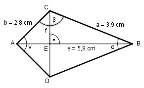

Aufgabe 159 Wie groß ist die Diagonale f des Drachenvierecks?

Im Dreieck ABC: Fall SSS: e2 = a2 + b2 - 2 * a * b * cos β |+2*a*b*cos β e2 + 2 * a * b * cos β = a2 + b2 |-e2 2 * a * b * cos β = a2 + b2 - e2 | :2 * a * b a2 + b2 - e2 3,92 + 2,82 - 5,82 cos β = --------------- = -------------------- = 2 * a * b 2 * 3,9 * 2,8 = - 0,4849 --> β = 119° Im Dreieck ABC: Fall SSW: Sinussatz: e b ------- = --------- |*sin α/2 sin β sin α/2 e * sin α/2 --------------- = b |*sin β sin β e * sin α/2 = b * sin β |:e b * sin β sin α/2 = ------------ = e 2,8 cm * sin 119° 2,8 cm * 0,8746 = ------------------- = ----------------- = 5,8 cm 5,8 cm = 0,4222 --> α/2 = 25° α = 50° Im Dreieck EBC: f/2 sin α/2 = ---- |*a a f/2 = a * sin α/2 | *2 f = 2 * a * sin α/2 f = 2 * 3,9 cm * sin 25° = = 2 * 3,9 cm * 0,4226 = 3,3 cm